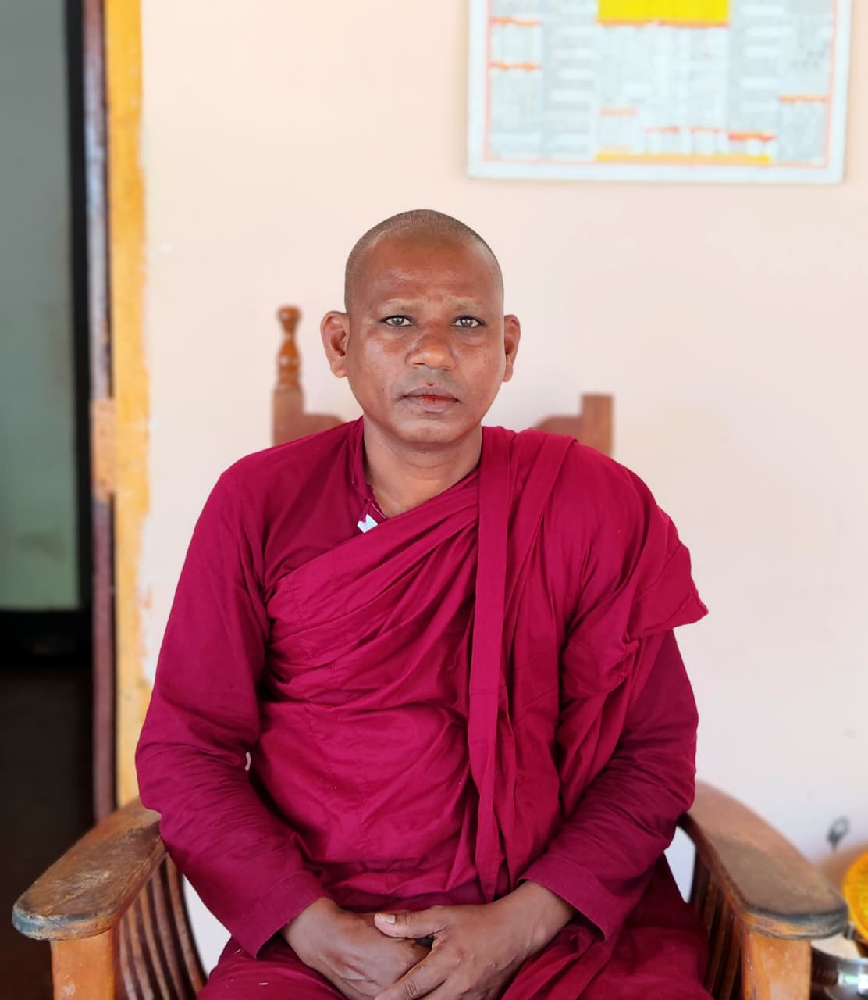

ගමේ පන්සල - ඩිජිටල් තොරතුරු පියස
ගාම්භීර වූ ධර්ම රශ්මියෙන් නගරයටත් ගමටත් සෙත සලසන අප හිරිගොල්ලේගම අරුණපුර ශ්රී බෝධිමළු විහාරස්ථානයේ ඩිජිටල් අවකාශයට ඔබව සාදරයෙන් පිළිගනිමු.

"සම්මා සම්බුද්ධ ශාසනයේ චිරස්ථිතිය උදෙසාත්, ගම්වැසි සහ ලෝවැසි සියලු දෙනාගේ අභිවෘද්ධිය උදෙසාත් අප විහාරස්ථානය නිරන්තරයෙන් කැපවී සිටී. ධර්ම දානය සහ ශාසනික මෙහෙවර ඩිජිටල් තාක්ෂණය ඔස්සේ ඔබ වෙත ගෙන ඒමට ලැබීම සතුටකි."
- පූජ්ය විලච්චියේ ධම්මරතන හිමි
මහා සංඝරත්නයට සහ දායක පිරිසට වැඩ සිටීම සඳහා ඉදිකරනු ලබන අලුත් බණ ශාලාව සහ ධාතු මන්දිරයේ වර්තමාන ප්රගතිය සහ පරිත්යාග තොරතුරු.
ගමේ දූ දරුවන්ට සදහම් අධ්යාපනය ලබාදෙන දහම් පාසලේ පන්ති වේලාවන්, ගුරු මණ්ඩලය සහ සිසුන්ගේ ශාසනික ජයග්රහණ.
පෝය දින සීල ව්යාපාර, ධර්ම දේශනා, වාර්ෂික කඨින පින්කම ඇතුළු ඉදිරියට පැවැත්වෙන සියලුම ශාසනික උත්සව.